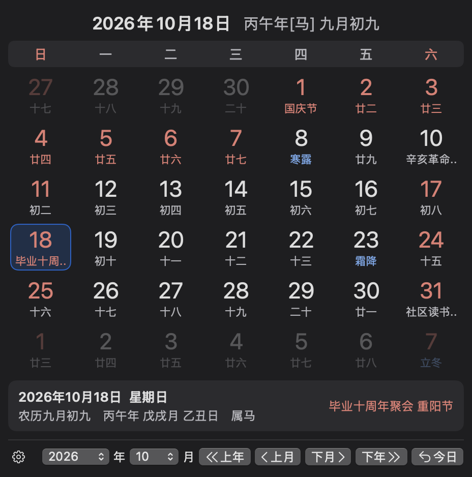
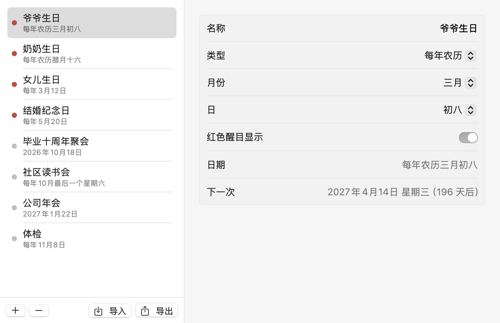

点一下菜单栏，农历、节气、节日和国务院放假安排一目了然。还能记下家人的农历生日和各种纪念日。

原生 Swift 开发，轻巧、省电，与系统外观融为一体。
图标显示今天的日期，点击弹出月历。每个日期下方显示农历、节日或节气。
使用系统自带的中国历法计算，与香港天文台 1921–2099 年对照表逐日核对一致。显示干支、生肖、二十四节气。
按国务院公布的安排标出放假和调休上班的日子，每周自动检查更新。
支持每年农历、每年公历、某月第几个星期几和单次日期，可以导入、导出。
跟随系统，或者固定为日间、夜间模式。内置节日可以按分类显示或隐藏。
← → 切换年份，↑ ↓ 切换月份，回车回到今天。可设置开机自动启动。
家人的农历生日每年都在不同的公历日期，交给万年历来记。

下载后解压，把 WanNianLiSwift 拖到“应用程序”文件夹即可。
程序没有经过 Apple 公证。如果提示“无法验证开发者”，在“访达”中按住 Control 点按程序，选择“打开”；或者在终端中执行：
xattr -cr /Applications/WanNianLiSwift.app在“系统设置 → 控制中心 → 时钟选项”中，把“显示日期”设为“永不”，只保留时间和星期，菜单栏会更简洁。
按住 Command 键拖动菜单栏图标，把它放到时钟的左边。